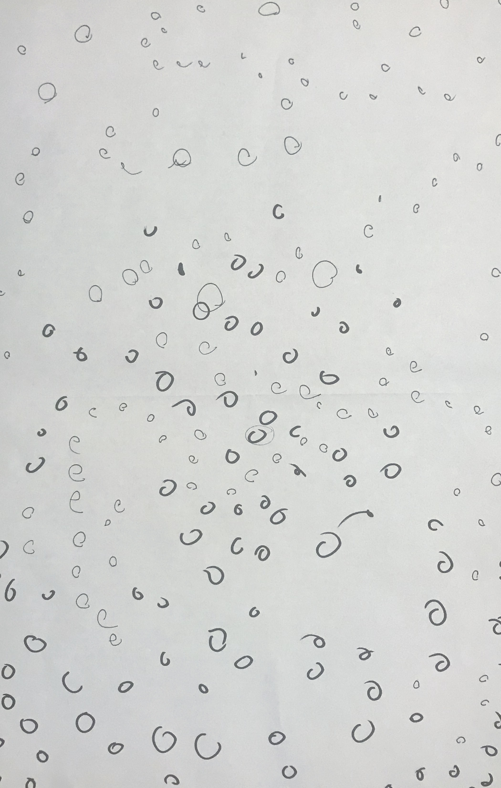
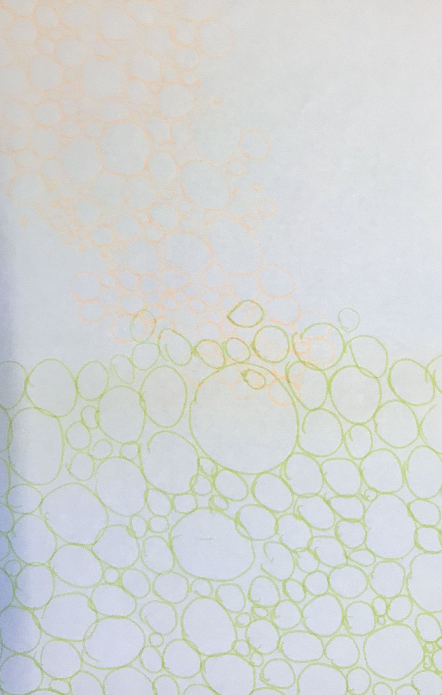
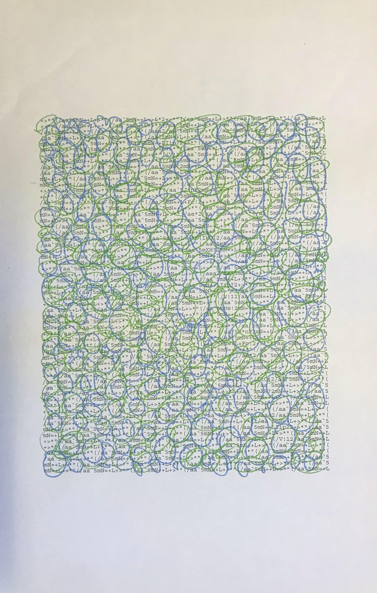
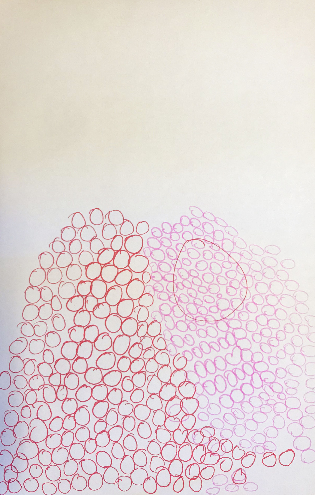

Take your phone.
Open your timer and set it to 3 minutes.
Put your phone on the table.
Each person take one colored marker.
Face each other on either side of the paper.
Start the timer.
Draw random circles starting from the borders of the paper, moving towards the center.
When you’re drawing the circles, do not overlap your own circles, but feel free to overlap your partner’s.
Stop when the timer goes off.



